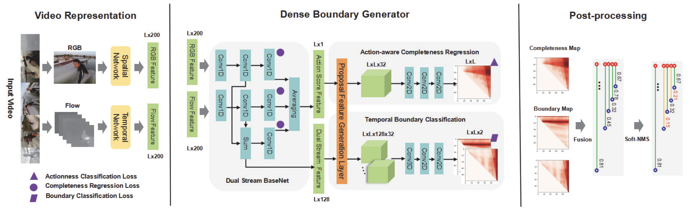

|
Chuming Lin (林楚铭)
Chuming is a Researcher at Tencent Youtu Lab, Shanghai.
He got his Master degree from School of Computer Science, Fudan University in 2020, supervised by Prof.
Bo Yan. Previously, he received the Bachelor degree from Fudan University in 2017.
His research interests include computer vision and deep learning, particularly focusing on temporal action localization and image/video enhancement tasks.
Email /
Google Scholar /
Github /
LinkedIn
|
Recent news
04/2021 – Our Team Imagination is the winner of CVPR NTIRE 2021 Challenge on Video Spatial-Temporal Super-Resolution. 04/2021 – Our Team Imagination is the runner-up of CVPR NTIRE 2021 Challenge on Video Spatial Super-Resolution. 03/2021 – Our AFSD on temporal action localization is accepted by CVPR'21, with the acceptance rate to be 23.7%. 11/2019 – Our DBG on temporal action proposal is accepted by AAAI'20, with the acceptance rate to be 20.6%. The code of our DBG is released at [ActionDetection-DBG], which achieves Top 1 performance on ActivityNet Challenge on Temporal Action Proposals. 11/2018 – Our FFCVSR on video super-resolution is accepted by AAAI'19, with the acceptance rate to be ONLY 16.2%.
Publications (* equal contribution, # first student author)
|
|
Learning Salient Boundary Feature for Anchor-free Temporal Action Localization
C. Lin*, C. Xu*, D. Luo, Y. Wang, Y. Tai, C. Wang, J. Li, F. Huang and Y. Fu.
Computer Vision and Pattern Recognition (CVPR), 2021
arXiv
/
Paper
/
Code (Official)
|
|
|
Fine-Grained Motion Estimation for Video Frame Interpolation
B. Yan, W. Tan, C. Lin#, L. Shen.
IEEE Transactions on Broadcasting (IEEE Trans. Broadcast.), 2020
Paper
|
 |
Fast Learning of Temporal Action Proposal via Dense Boundary Generator
C. Lin*, J. Li*, Y. Wang, Y. Tai, D. Luo, Z. Cui, C. Wang, J. Li, F. Huang and R. Ji.
AAAI Conference on Artificial Intelligence (AAAI), 2020
arXiv
/
Code (Official)
No. 1 performace on ActivityNet Challenge on Temporal Action Proposals
|
|
Frame and Feature-Context Video Super-Resolution
B. Yan, C. Lin#, W. Tan.
AAAI Conference on Artificial Intelligence (AAAI), 2019
arXiv
/
Code (Official)
|
|
Cycle-IR: Deep Cyclic Image Retargeting
W. Tan, B. Yan, C. Lin, X. Niu.
IEEE Transactions on Multimedia (TMM), 2019
arXiv
/
Code (Official)
|
|
Foreground Detection in Surveillance Video with Fully Convolutional Semantic Network
C. Lin, B. Yan, W. Tan.
IEEE International Conference on Image Processing (ICIP), 2018
Paper
|
Awards
2021 Winner Award of CVPR NTIRE 2021 Challenge on Video Super-Resolution: Spatial-Temporal (Team name: Imagination) 2021 Runner-Up Award of CVPR NTIRE 2021 Challenge on Video Super-Resolution: Spatial (Team name: Imagination) 2020 Shanghai outstanding graduates 2018 and 2019 Huawei Graduate Scholarship of Fudan University 2017 2nd Prize of Graduate Mathematical Contest in Modeling, China 2013 1st Prize of National Olympiad in Informatics in Province (NOIP)
For the style of my personal website, please refer to the wonderful page from Jon Barron.
|
|